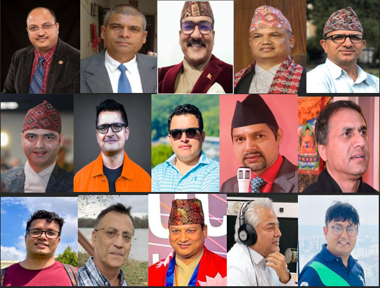

Our Members
Meet the dedicated professionals who are part of our global community.
Advisors FIJA
Executive Members FIJA
Ram Prasad Khanal (Founder/President)
Mr. Ram Prasad Khanal is a Founder/President of Federation of International Journalist, America (FIJA).
He has been in Journalism for the past four decades. Currently he is working as an Editor in chief of Nepalmother.com which is publishing from USA since 2008 and it’s Online version on Nispakshya National Weekly News Paper which was published for more than 17 years continuously from Nepal.
Mr. Khanal is working in Avenues Khabar Television as an America Editor.
Mr. Khanal was working in Nepal Television as a Senior Program Producer, Director andPresenter for more than decades. He served there as a Board of directors too.
He was serving in BBC Nepali Service as a freelancer/ Journalist.
He was working in Radio Nepal as a Senior Program Producer, Director and Presenter. As well as National Dailies: Lokpatra, Nepal Times, Janasangharsha, Sandesha. In National Weeklies: Rastrapukar, Nepalbani, Nepali Patra, Chhalaphal, Dristi, Lalakar, Gorkha Express, Jana Awaj, Satya, Xray, Lumbini Times, Pharak Mat etc.
He is a well-known journalist in Print Media, Radio journalism, Television Journalism and online journalism too.
We can follow him on national and international platforms: Ram Prasad Khanal OR Wikipedia
* Honored/Awarded by US Presidential "Lifetime Achievement Award" 2023 by US President Joe R. Biden.
Tanka Dahal (General Secretary)
Mr. Tanka Dahal is a Founder/General Secretary of Federation of International Journalist, America (FIJA).
An experienced and highly technical software engineer with over 25 years of experience, Mr. Dahal has also imparted knowledge as a teacher in Nepal for several years. As a freelance journalist, he owns, runs and manages the highly popular YouTube channel, "Tech Tanka," where he primarily addresses anti-corruption, social issues, and educational content.

TBD: Treasurer